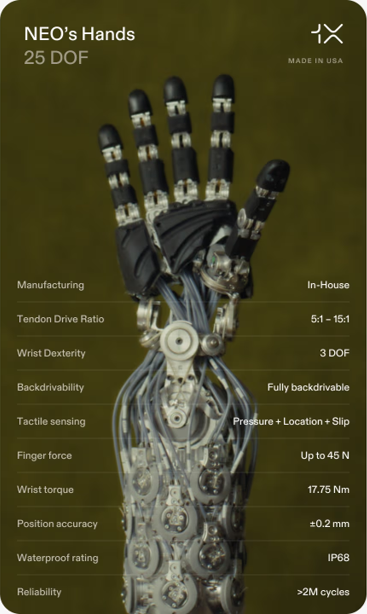
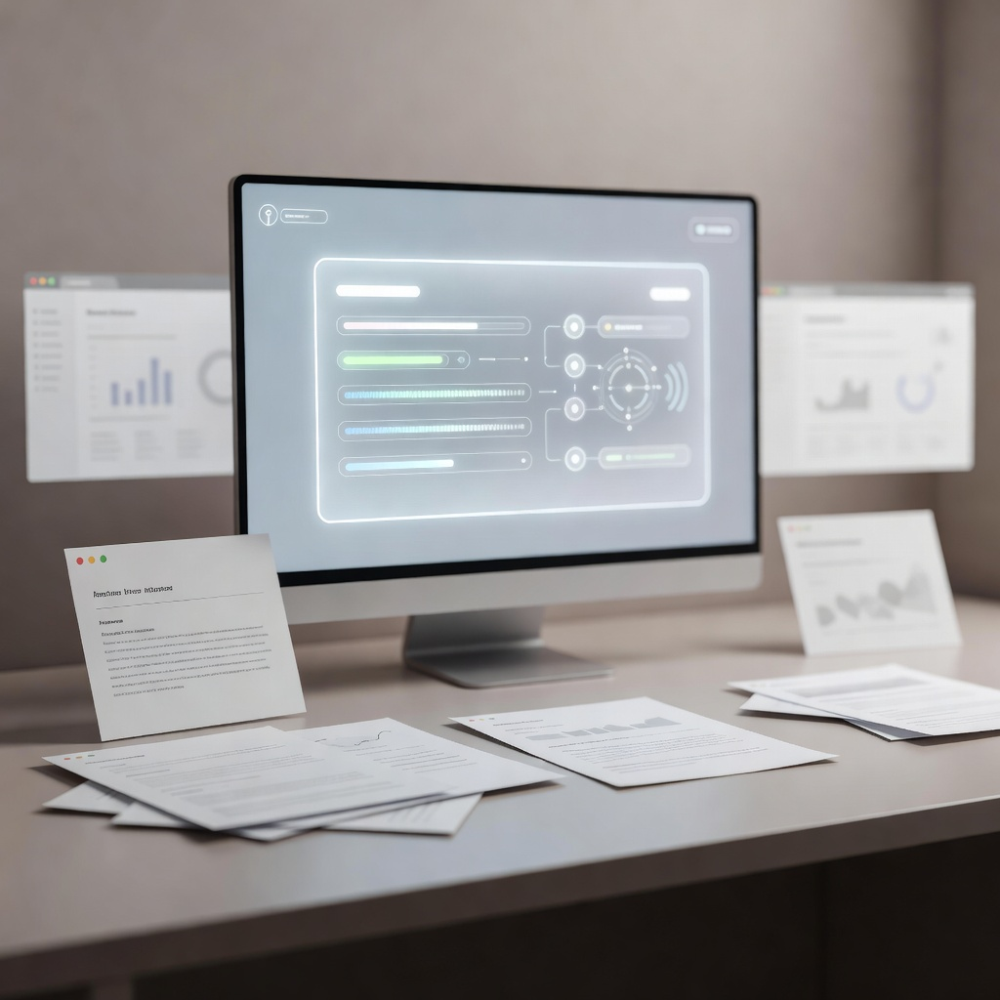
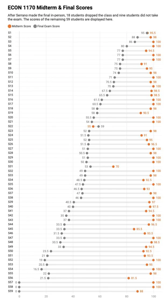

Artificial Insights
📅 Jul 16, 2026 · Issue #13
In This Issue

NEO's new hands have almost human level sensitivity and function

1X introduced a new tendon-driven hand for its NEO humanoid robot with nearly all of the movement that our hands have (25 of 27 things). Previous robot hands lacked the combination of full actuation, tactile sensing, and washability that we need. Since Neo moves like a human hand, it can now be trained from internet-scale video of humans performing tasks. This will be extremely fast. The demo shows fancy movement including tactile sensing, and an opposable thumb. So far in robotics, getting the sensitivity of the hands correct was a huge limiting factor to using robots for sensitive tasks. This problem has now been solved. Where they will be used: food preparation, sign language, hazardous environment operation, remote surgery, space-related functions, physical therapy assistance. However, the hands' physical capabilities currently exceed the AI's ability to fully utilize them. This will not be the case for long.
Sources: youtu.be ↗ · humanoid.guide ↗
$130 billion in AI data-center projects have run into the physical world
Approximately $130 billion in U.S. AI-focused data-center projects were blocked or delayed during the first quarter of 2026. It's not just Wisconsin Rapids... many other communities are raising concerns about electricity costs, grid upgrades, water use, environmental effects, and whether the long-term local benefits justify the infrastructure burden. More than 300 data-center-related bills were introduced during the first six weeks of the year, and organized opposition has spread across nearly every state. Much of the AI discussion often treats computing power as an abstract resource. It is not. Every major AI expansion eventually becomes a land, power, water, permitting, and public-policy decision. Data centers can be done correctly, and be a positive for the community. However, that is not what happens if the community is not involved at each step.
GPT-Live-1 makes voice feel more like a working interface
OpenAI's new live voice model can listen and speak at the same time, handle interruptions, remain quiet while someone thinks, and delegate harder work to another model without ending the conversation. The system can keep a live interaction moving while deeper analysis happens elsewhere. I suspect that the best use case is document-based discussion: load a source, talk through it, and let the model ask follow-up questions.
Meta's AI identity tool lasted three days
Meta briefly launched an image-generation feature... and 3 days later removed it. Meta silently enrolled every adult with a public Instagram profile into its AI image system, so anyone could feed your photos into the model and generate new images of you without you ever opting in or being notified. Fake endorsements, celebrity photo-ops, and false graduation pictures are the least of the problems here. You'd think that Meta would know that making a photograph public is not the same as granting permission for strangers or advertisers to generate synthetic versions of a person's identity. Seriously Meta...be better.

🛠️ AI Research Tools Snapshot brings some order to the research-tool market
The News: AI Research Tools Snapshot is a curated map of tools that support different parts of the research process. It helps users compare products by function and see where they fit within discovery, reading, analysis, organization, and writing workflows.
My Take: I'm a big fan of curated tool sets. I've seen so many examples of AI tools to help with research that I was delighted when someone showed me this. Enjoy!
🛠️ NotebookLM can turn a dense report into a short video briefing
The News: NotebookLM has added short video briefings that can convert source material into a roughly 60-second explanation of what changed, why it matters, and what an audience should notice first. I do risk being seen as the ultimate NotebookLM fan, but... reminder, these are grounded details meaning no hallucinations. Some great use cases: a briefing aimed at a specific audience, a targeted introduction to a class where you put the sources in NotebookLM, a summary of the updated information in the constantly updating document. These videos are of excellent quality.
🛠️ ChatGPT Work moves agentic execution toward ordinary users

The News: ChatGPT rolled out a new desktop work app. Work, in this case, describes a desktop-oriented workspace that combines conversational assistance, files, browsing, coding capabilities, and connected tools in one simple unified environment.
My Take: This is the first time that many people will get to see how agents work. Agentic execution is being placed inside a general-purpose work interface. That can make document creation, analysis, research, and website production accessible for everyone (you don't need to know code). The good news is that the agent can access files, cloud systems, communication channels, and local folders. This is something you should play around with.

🔬 The model under your AI assistant is becoming a moving target
Microsoft has quietly shifted the model it uses for your Copilot queries to a worse model. It is routing tens of thousands of weekly prompts through its own MAI models rather than relying entirely on OpenAI and Anthropic. The reason is cost: frontier models are expensive. With everyone who has an Office 365 account using them, it saves millions of dollars every hour.
Here's the sneaky change: users still see Copilot. They open the same application, click the same button, and receive an answer in the same panel. Underneath that interface, however, the request may be routed to a different model based on task complexity, price, latency, availability, policy requirements, or the quality Microsoft believes the task needs. This will give you a 'worse' answer, so when you are working on things that need the best intelligence, be skeptical of Copilot.
I think that we all need to stop evaluating AI only at the product level. A statement such as "Copilot works well" is becoming too broad to be useful. Works well for what? Summarizing a meeting? Interpreting a spreadsheet? Drafting policy language? Writing code? Extracting evidence from a contract? The correct unit of evaluation is the task.
We will call what Microsoft is doing 'model routing'. Model routing is not inherently a problem. It may be the only economically sustainable way to provide AI across an organization. The problem arises when the routing is invisible and organizations treat every response as though it came from the same system with the same capabilities. It's important to know which model is good for which type of task. Most of the time I jump from model to model in order to 'match task to talent'.

🎓 A 96% midterm average was not the achievement Brown thought it was

Brown University economics professor Roberto Serrano suspected that many students used AI improperly on a take-home midterm after the class produced an average score of 96%. He voided the midterm, moved the final exam to an in-person format, and the final average fell to 48.6%. Eighteen students reportedly dropped the course, and nine did not take the final.
The score difference is dramatic, but the score difference does not necessarily indicate what Professor Serrano thinks. I think this exposes a larger problem with assessment design and institutional readiness. A take-home assessment that can be completed with outside assistance is weak evidence of individual mastery. This is something that we've been talking about at Mid-State for years now. We all make sure the course includes clear AI-use expectations, as well as discussion of what is being used for assessment.
The answer is not to move every assessment back into a locked classroom, despite what a lot of the reporting for this story suggests. Brown's poor institutional response is disappointing. Faculty should not have to invent a crisis process after an entire assessment becomes questionable. This is something every faculty member should factor in to their assessments. Honestly, November 2022 is when ChatGPT first made us realize that all of our assessments need to change and it's shocking to have a prestigious college miss the boat this badly.

🎬 Turning a dense report into a one-minute NotebookLM briefing
For this week's demonstration, I am using NotebookLM to turn a whitepaper into a short video briefing for a specific audience. The workflow starts with the source document rather than a blank prompt. I upload the paper, ask NotebookLM to focus on one question, and generate several short versions before choosing the strongest one.
My review step is still the most important part. I compare the briefing against the report, check numbers and causal claims, and look for important omissions. It's easy to skip this step when you're comfortable that AI is doing a good job. I find that I need reminding of this often!


💥 Fluent voice. Easy World Cup mistakes.
The newer live voice interface feels surprisingly good to talk to. It keeps up, handles interruptions, and makes it easy to think out loud with the model. In the moment, the conversation feels polished and useful.
Then I asked it about the World Cup.
That is where the mismatch shows up. The interface still sounds confident and collaborative, but it makes easy mistakes on a topic that is happening right now — details you would expect a careful assistant to get right, or at least flag as uncertain. The clip below is my own test of that gap: strong conversational fluency paired with weak factual reliability.
This is called the jagged edge. The AI is great at some things that are hard, and cannot handle some easy things.

Compare AI systems by task, not by brand
Pick one real document and one task that matters: identify the most consequential points, and what you want it to do. Then, run the same task in two or three AI systems using identical source material. Spend ten minutes comparing what the systems actually produce and decide which one does a better job for your specific task. I think this is something we will be doing often.
The Prompt:
""Using only the attached source, identify the five most consequential points for [AUDIENCE]. For each point, explain why it matters and quote or cite the exact supporting section from the source. Then list anything important you may have omitted, any claim you are uncertain about, and what a human reviewer should verify before using this output.""
Two practical things to try this week
- Use NotebookLM to create a short video briefing from a real report or document you already need to share.
- Try creating a recurring task or reusable skill in Copilot or ChatGPT for something you do regularly. Saving time is the key here, I think.